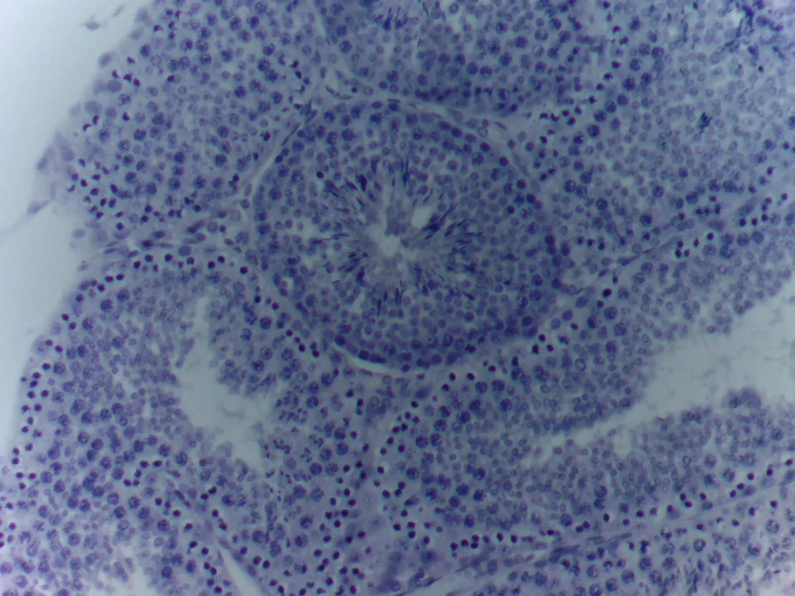
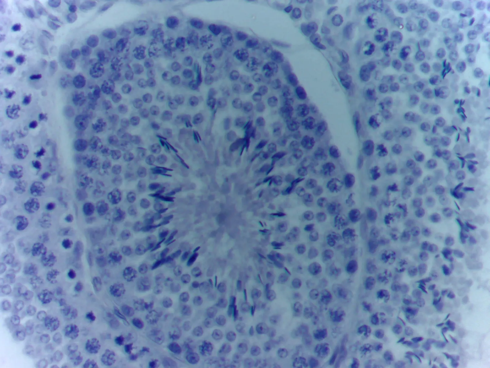
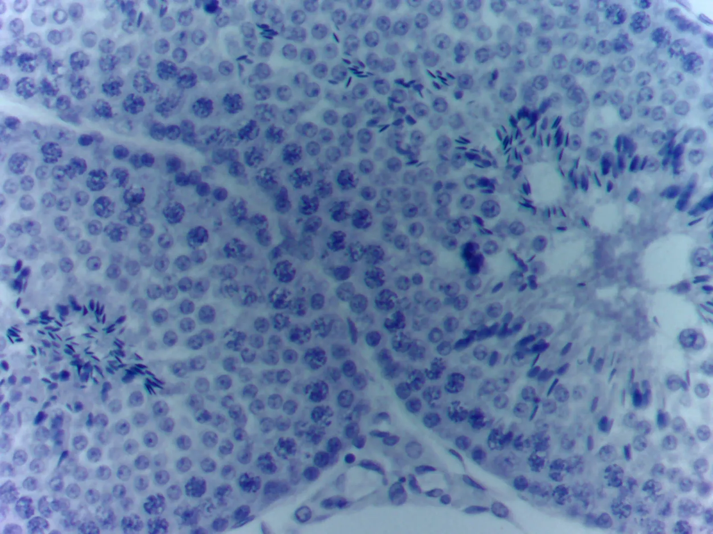

Lâmina 67 · Sistema reprodutor
Vesícula seminal



Toque na imagem para ampliar. No computador, use as setas do teclado para trocar de imagem.
Lâmina 67 · Sistema reprodutor



Toque na imagem para ampliar. No computador, use as setas do teclado para trocar de imagem.